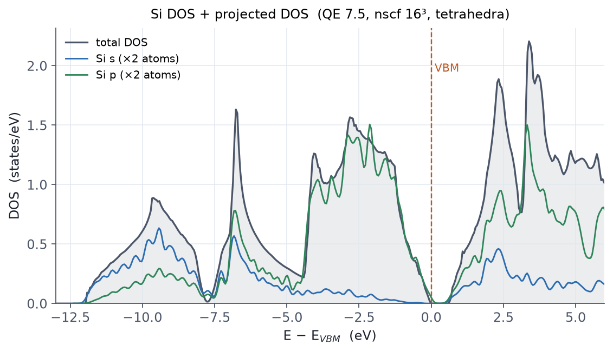
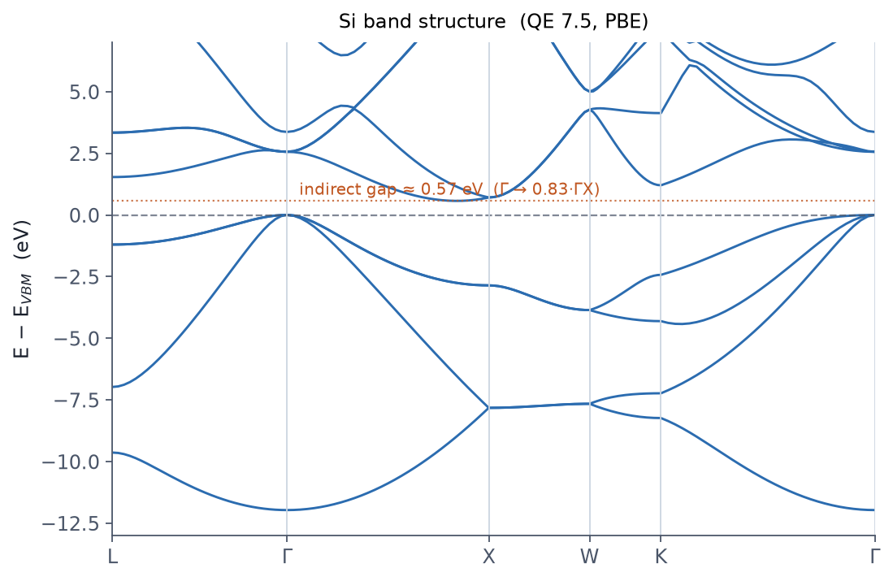

For electronic-structure post-processing, pipeline order and matching
prefix/outdir are everything.
The DOS / PDOS pipeline
scf (coarse k) ─→ nscf (dense k, occupations='tetrahedra') ─┬─→ dos.x (total DOS)
└─→ projwfc.x (PDOS + Löwdin)
- nscf: densify the k-grid (say 8³ → 16³), raise
nbndto cover the conduction bands, setoccupations='tetrahedra'. The tetrahedron method requires a Γ-centered automatic grid with zero shift. The optimized variant'tetrahedra_opt'is fine for dos.x, but we found (measured, QE 7.5) that projwfc.x writes all-zero PDOS on top of it; if your pipeline includes PDOS, use the classic'tetrahedra'(see the note in Example E7). dos.x(&DOS): the total DOS. Thefildosfile has E (eV), DOS, and the integrated DOS. Check that the integral hits the valence electron count at the top of the valence bands.projwfc.x(&PROJWFC): atom- and orbital-resolved DOS (PDOS) and Löwdin charges. Files appear assi.pdos_atm#1(Si)_wfc#2(p)and so on. The d occupation of Fe, spin-resolved breakdowns, and d-band centers all come from here.

The band-structure pipeline
scf ─→ calculation='bands' (K_POINTS tpiba_b path) ─→ bands.x ─→ plot
The k-path goes in the card of the 'bands' run:
K_POINTS (tpiba_b)
6
0.500 0.500 0.500 30 ! L
0.000 0.000 0.000 30 ! Gamma
0.000 1.000 0.000 20 ! X
0.500 1.000 0.000 20 ! W
0.750 0.750 0.000 30 ! K
0.000 0.000 0.000 0 ! Gamma (last point gets 0 divisions)
Each line is a high-symmetry point plus the number of divisions to the next
point. bands.x (&BANDS) reorders the eigenvalues into bands and writes
filband (including a .gnu file).
tpiba_b is Cartesian in units of 2π/a;
crystal_b is fractional in the reciprocal basis. QE's
primitive-vector convention for ibrav=2 can differ from the
textbook fcc convention, so pasting literature fractional coordinates
into crystal_b produces the wrong path.
When in doubt, tpiba_b is the safe choice.
For complex lattices, generate the path with
SeeK-path.

Three ways to read a gap
- The
highest occupied, lowest unoccupied level (ev)line in the scf or nscf output: simplest. - Directly from the band data (VBM and CBM): also gives you the location of an indirect gap.
- The zero-DOS window in the DOS: beware, a coarse k-grid makes gaps look wider than they are.
Shrinking DeltaE because the DOS looks jagged. The cause is
almost always an insufficient nscf k-grid; densify it
and use the tetrahedron method. Running dos.x straight off
a coarse scf density works, but the resolution is poor. Respect the
pipeline order.
Related examples
- E7 · Si DOS and PDOS: the full measured pipeline plus Löwdin charges.
- E8 · Si band structure: path setup and reading the indirect gap.
- E10 / E11 · FeO: spin-resolved DOS showing the GGA failure and the Hubbard splitting.